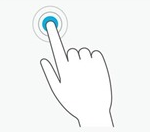
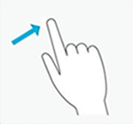
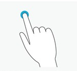
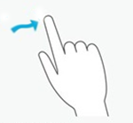
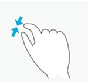
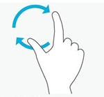
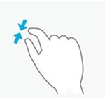
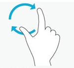

ジェスチャー
中級 プログラマー
ジェスチャとは、あらかじめ定義されているポインター パターンです。Stride は、ジェスチャを認識して対応するイベントをトリガーできます。たとえば、戦略ゲームでは、プレイヤーはドラッグ ジェスチャを使用して戦場にユニットをドラッグ アンド ドロップできます。ジェスチャでは 1 本または複数本の指を使用できます。
Note
構成ファイルのすべての長さ、速度、エラー マージンでは、正規化された値を使用する必要があります。
ジェスチャの認識を有効にする
ジェスチャの認識には CPU 時間が必要であるため、既定では、入力システムはジェスチャを認識しません。
ジェスチャの認識を有効にするには:
- 認識するジェスチャの構成クラスのインスタンスを作成します。たとえば、ドラッグ ジェスチャの場合は、GestureConfigDrag のインスタンスを作成します。
- クラスのパラメーターを構成します。
- ジェスチャの構成を Gestures コレクションに追加します。
Warning
ジェスチャの認識をアクティブにした後では、ジェスチャのパラメーターを変更できません。パラメーターを変更する必要がある場合は、Gestures コレクションからジェスチャを削除し、新しいパラメーターで新しいエントリを作成する必要があります。
ジェスチャの認識を無効にする
InputManager.Gestures コレクションからジェスチャを削除します。
ジェスチャの認識
入力システムは、ジェスチャを検出すると、GestureEvent を InputManager.GestureEvents のリストに追加します。イベントには、ジェスチャとその状態に関する情報が含まれます (ジェスチャの場所や使用された指の数など)。
Note
各ジェスチャには、固有のジェスチャ イベント クラスが関連付けられています (後述)。
GestureEvent.Type フィールドは、どのジェスチャが認識されたかを示します。基底ジェスチャ イベントをジェスチャ固有のイベント型にキャストして、イベントに関するジェスチャ型固有の情報を取得できます。
Stride は同時に複数のジェスチャを検出できるので、イベント リストは 1 回の更新で複数の項目を格納することができます。
リストは更新のたびにクリアされるので、手動でクリアする必要はありません。
ジェスチャを構成する
GestureConfig クラスでは、次のようなパラメーターを構成できます。
ジェスチャが使用する指の数
ジェスチャが使用するタップの回数と時間
ジェスチャの方向
Note
各ジェスチャには、固有の構成パラメーターを含む専用の構成クラスがあります (後述)。
ジェスチャの状態
ジェスチャは常に次の 4 つの状態のいずれかになっています。
開始 (Began)
変更 (Changed)
終了 (Ended)
発生 (Occurred)
単独ジェスチャ (タップ、フリック、長押し) は常に_発生_状態になっています。連続ジェスチャ (ドラッグ、複合) は常に、_開始_状態で開始し、何らかの_変更_状態がそれに続き、_終了_状態で終了します。
ジェスチャの現在の状態を問い合わせるには、トリガーされたジェスチャ イベントの GestureEvent.State フィールドを使用します。
ジェスチャの種類
Stride がサポートするジェスチャには大きく分けて次の 2 つの種類があります。
単独ジェスチャ (タップ、フリック、長押し) は、1 つのイベントをトリガーします。
連続ジェスチャ (ドラッグ、複合) は、ユーザーがジェスチャの方向を変更したときに一連のイベントをトリガーします。
単独ジェスチャ
タップ

ユーザーは、画面に触れて、すぐに指を離します。
構成クラス: GestureConfigTap
イベント クラス: GestureEventTap
画面に触れる指の数をジェスチャの間に変えることはできません。タップに必要な指の数を設定するには、RequiredNumberOfFingers を変更します。
Tip
シングル タップとマルチ タップを区別するため、システムはタップ イベントでのレイテンシを使用します。これを無効にするには、GestureConfigTap.MaximumTimeBetweenTaps フィールドを 0 に設定します。
フリック

ユーザーは、画面に触れて、すばやい直線的な移動を行った後、指を離します。
構成クラス: GestureConfigFlick
イベント クラス: GestureEventFlick
面に触れる指の数をジェスチャの間に変えることはできません。
フリック ジェスチャの最小の長さを設定するには、GestureConfigFlick.MinimumFlickLength を使用します。
フリックの方向を上下または左右に制限するには、 GestureConfigFlick.FlickShape を使用します。
長押し

ユーザーは、画面に触れて、一定の時間、指を離さずに圧力をかけ続けます (既定の時間は 1 秒です)。
構成クラス: GestureConfigLongPress
イベント クラス: GestureEventLongPress
画面に触れる指の数をジェスチャの間に変えることはできません。
長押しジェスチャで押している最小限の時間の長さを変更するには、GestureConfigLongPress.RequiredPressTime を変更します。
連続ジェスチャ
ドラッグ

ユーザーは、画面に触れて、移動を行った後、指を離します。
構成クラス: GestureConfigDrag
イベント クラス: GestureEventDrag
画面に触れる指の数をジェスチャの間に変えることはできません。
短いドラッグを検出するには、GestureConfigDrag.MinimumDragDistance を小さくします。
ドラッグの方向を上下または左右に制限するには、GestureConfigDrag.DragShape を使用します。
複合
  
 
ユーザーは、2 本の指で画面に触れて、各指を個別に動かします。
構成クラス: GestureConfigComposite
イベント クラス: GestureEventComposite
複合ジェスチャを行うには、正確に 2 本の指で画面に触れる必要があります。システムが 3 つの基本アクションのいずれかを検出すると、複合ジェスチャがトリガーされます。
- 平行移動: ユーザーは、2 本の指を一緒に同じ方向へ動かします。
- 拡大縮小: ユーザーは、2 本の指を近付けるように、または離すように動かします。
- 回転: ユーザーは、2 本の指を中心の周りに回転させます。
コード例
ジェスチャの認識をアクティブまたは非アクティブにする
認識するジェスチャの構成を作成するには:
// 認識するジェスチャの構成を作成する。
var singleTapConfig = new GestureConfigTap();
// タップ ジェスチャの認識を開始する。
Input.Gestures.Add(singleTapConfig);
// 認識するジェスチャの構成を作成する。
var doubleTapConfig = new GestureConfigTap(2, 1);
// ダブル タップ ジェスチャの認識を開始する。
Input.Gestures.Add(doubleTapConfig);
// タップ ジェスチャの認識を停止する。
Input.Gestures.Remove(singleTapConfig);
// すべてのジェスチャの認識を停止する。
Input.Gestures.Clear();
ジェスチャを構成する
各構成クラスには、既定のジェスチャ構成に対応する、パラメーターを持たないコンストラクターがあります。頻繁に変更するパラメーターには、特別なコンストラクターを使用できます。
Warning
入力システムが壊れる可能性があるため、他のフィールドを変更することはお勧めしません。ただし、必要がある場合は、対応するプロパティを使用して変更できます。
// ジェスチャの既定の構成。
var singleTapConfig = new GestureConfigTap();
// 専用のコンストラクターを使用してジェスチャの構成をカスタマイズする。
var doubleTapConfig = new GestureConfigTap(2, 2);
// 目的のプロパティに直接アクセスしてジェスチャの構成をカスタマイズする。
// 作業内容について十分に把握すること。これを変更すると入力システムが壊れる可能性がある。
var noLatencyTap = new GestureConfigTap() { MaximumTimeBetweenTaps= TimeSpan.Zero };
ジェスチャ イベントにアクセスする
認識されたジェスチャによってトリガーされたイベントのリストにアクセスするには、InputManager.GestureEvents コレクションを使用します。このコレクションは、更新のたびに自動的に作成されます。
var currentFrameGestureEvents = Input.GestureEvents;
ジェスチャの種類を識別する
GestureEvent.Type フィールドを使用してジェスチャの種類を識別した後、それを適切なイベント型にキャストして、イベントに関する他の情報を取得します。
foreach( var gestureEvent in Input.GestureEvents)
{
// イベントがタップ ジェスチャからのものかどうかを確認する
if (gestureEvent.Type != GestureType.Tap)
continue;
// 特定のタップ イベント クラスにキャストする。
GestureEventTap tapEvent = (GestureEventTap) gestureEvent;
// タップ イベント固有のフィールドにアクセスする。
log.Info("Tap position: {0}.", tapEvent.TapPosition);
}
ジェスチャの状態を識別する
ジェスチャ イベントの状態を取得するには、GestureEvent.State フィールドを使用します。
switch(compositeGestureEvent.State)
{
case GestureState.Began:
image.ComputePreview();
break;
case GestureState.Changed:
image.TransformPreview(compositeGestureEvent.TotalScale, compositionGestureEvent.TotalRotation);
break;
case GestureState.Ended:
image.TransformRealImage(compositeGestureEvent.TotalScale, compositionGestureEvent.TotalRotation);
break;
default:
break;
}